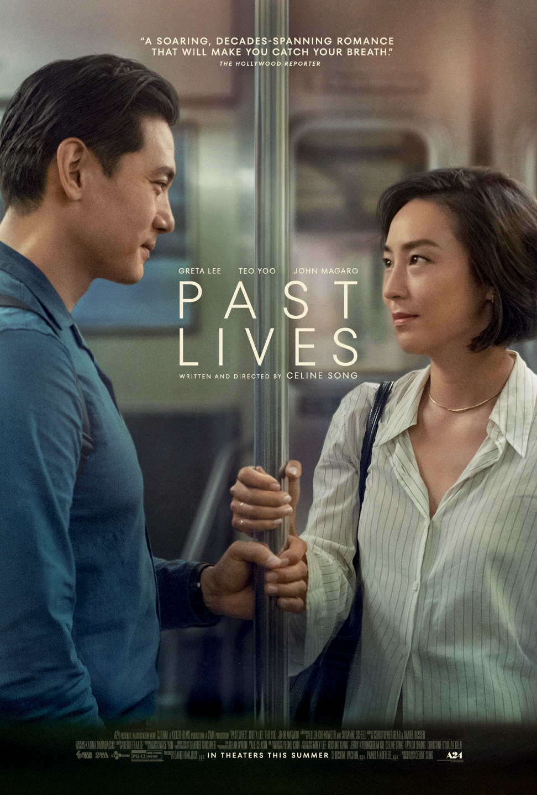

Ranking of my favorite Best Picture nominees for the 2024 Oscars
The 2024 Oscars ceremony is scheduled for Sunday, March 10th. It will mark the 96th Academy Awards. Among the films with the most nominations are: 'Oppenheimer,' 'Poor Things,' and 'Killers of the Flower Moon.' Here's my ranking of favorite movies for Best Picture at the 2024 Oscars. I'm not considering technical aspects, as they aren't my specialty. I'm simply judging the movies based on my vision and interests. He goes the list:

09. AMERICAN FICTION
- Director: Cord Jefferson
- Writer: Cord Jefferson and Percival Everett
- Stars: Jeffrey Wright, Tracee Ellis Ross, John Ortiz
American Fiction is a pleasant, light-hearted movie with a straightforward plot. The film's script is uncomplicated and does not explore its themes deeply. It fails to develop the problems and conflicts presented. In some ways, it critiques Hollywood and how money often takes precedence over quality content. I enjoyed the final scene.

08. THE ZONE OF INTEREST
- Director: Jonathan Glazer
- Writer: Martin Amis and Jonathan Glazer
- Stars: Christian Friedel, Sandra Hüller, Johann Karthaus
It's a disturbing film where the viewer remains apprehensive about what is happening behind the scenes at all times. The family's naturalness in such a barbaric scenario is discomforting. Even though the crimes are not explicitly shown, we can feel their impact. The sounds play a crucial role in the narrative and contribute to the atmosphere of tension. It's a great movie.

07. OPPENHEIMER
- Director: Christopher Nolan
- Writer: Christopher Nolan, Kai Bird, Martin Sherwin
- Stars: Cillian Murphy, Emily Blunt, obert Downey Jr.
Oppenheimer provides a profound cinematic and historical experience. Cillian Murphy and Robert Downey Jr. deliver incredible performances in their roles. Although I'm not typically a fan of Nolan's movies, and the sensitive subject matter of the film's main theme contributed to it not ranking higher on my list, it's likely to win the best picture award and more. Many scenes made me uncomfortable with how some characters trivialized the impact of the bomb. The test explosion scene is particularly incredible.

06. BARBIE
- Director: Greta Gerwig
- Writer: Greta Gerwig and Noah Baumbach
- Stars: Margot Robbie, Ryan Gosling, America Ferrera
Barbie was one of the most anticipated movies last year. It's colorful, humorous, and thought-provoking. While feminism is central to the movie, there were moments when the portrayal of Barbieland felt like a reversal of patriarchal norms, which may not align with the core values women are fighting for. The film's message is touching, blending moments of laughter and tears. And of course, the songs are amazing!

05. PAST LIVES
- Director: Celine Song
- Writer: Celine Song
- Stars: Greta Lee, Teo Yoo, John Magaro
Past Lives is a deeply sensitive movie, offering a touching and emotionally complex portrayal of real life. We experience the characters' longing, sadness, and moments of happiness as they navigate their lives, separated and reunited over time. The dialogues are incredibly moving, inviting us to dream alongside the characters about what their lives could have been.
04. ANATOMY OF A FALL
- Director: Justine Triet
- Writer: Justine Triet and Arthur Harari
- Stars: Sandra Hüller, Swann Arlaud, Milo Machado-Graner
Anatomy of a Fall is an intriguing movie with excellent editing. We're drawn into a crime with few details and explanations. I found myself torn between believing the suspect and questioning their innocence due to the prosecutor's compelling behavior during the trial. The film prompts viewers to contemplate the characters' backgrounds and motivations, leaving us wanting to learn more. It's an excellent piece of cinema.

3. KILLERS OF THE FLOWER MOON
- Director: Martin Scorsese
- Writer: Eric Roth, Martin Scorsese, David Grann
- Stars: Leonardo DiCaprio, Robert De Niro, Lily Gladstone,
Killers of the Flower Moon delves into themes of greed and violence, depicting the depths of horror that humans can inflict upon the vulnerable in pursuit of money and power. It stands as a masterpiece by Scorsese, ranking among his finest works. Throughout its three-hour runtime, viewers are confronted with the sickening atrocities committed against the Osage people, evoking feelings of helplessness and indignation. Despite its length, the film leaves audiences yearning for more insight into this painful tale, showcasing superb acting and directing that make it a truly powerful cinematic experience.
2. THE HOLDOVERS
- Director: Alexander Payne
- Writer: David Hemingson
- Stars: Paul Giamatti, Da'Vine Joy Randolph, Dominic Sessa
This is a perfect, melancholic, and dramatic comedy, a blend of sweetness and bitterness. The film delves into the relationship dynamics between a stern professor, a rebellious student, and a grieving school cook, as they spend the holidays alone at school. With well-developed characters and spectacular performances, audiences find themselves in love with each character, despite their imperfect lives and uncertain futures. It's a cinematic delight, a flawless masterpiece.

1. POOR THINGS
- Director: Yorgos Lanthimos
- Writer: Tony McNamara and Alasdair Gray
- Stars: Emma Stone, Mark Ruffalo, Willem Dafoe
Poor Thing stands out as my favorite among the award season nominees. It's extravagant, eccentric, and surreal, a romantic comedy unlike any other. Emma Stone's portrayal of Bella is exceptional, offering viewers a captivating work of art. The film's critiques of societal norms, as prudishness, sexism, conservatism, and patriarchy, induce audiences to question the true extent of their freedom. Through its exploration of pleasure, desire, empowerment, and personal growth, Poor Thing embarks on a thrilling adventure. While the third act may wander slightly off course, the film concludes magnificently, delivering an amazing movie experience."